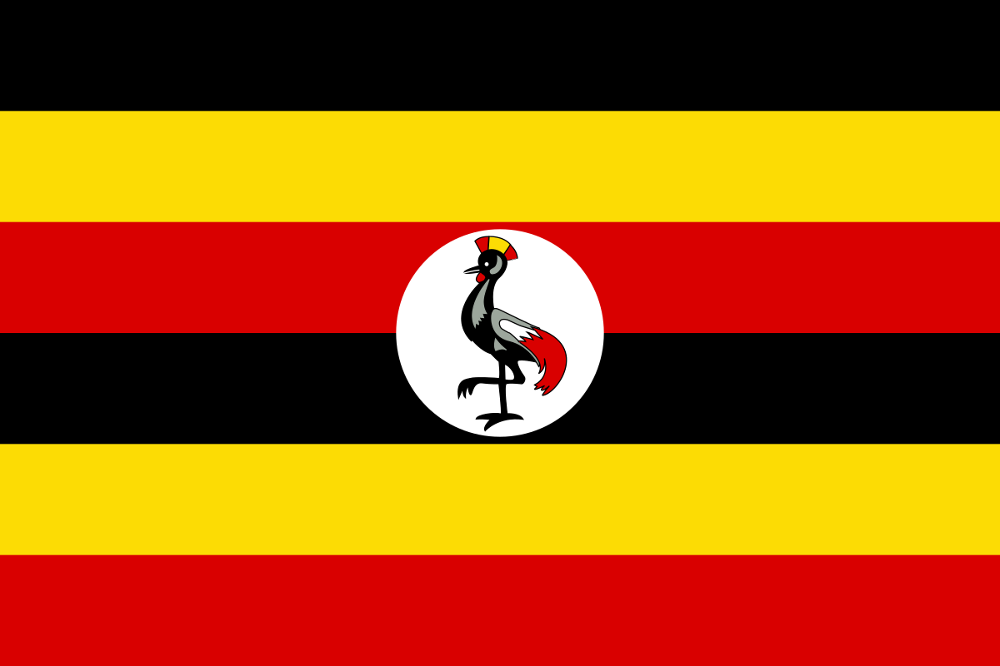

About Me
Hello My name is Muwanda Innocet. i was born in Kampala the capital city of Uganda in East Africa. I am a student at BYU-Idaho. I am currently in my second year of study and hoping to finish my degree in 2026. I am a very hard working person and I am very passionate about what I do.

About Uganda

Uganda is a landlocked country in East Africa. It is bordered by Kenya to the north, Tanzania to the east, Rwanda to the south, and the Democratic Republic of the Congo to the west. It is the largest country in Africa by area and the second largest by population.